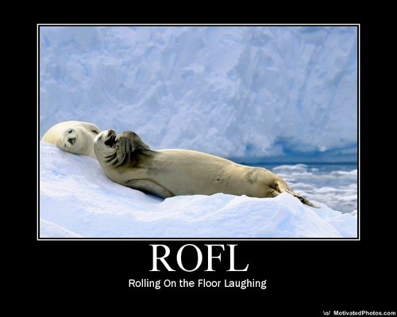
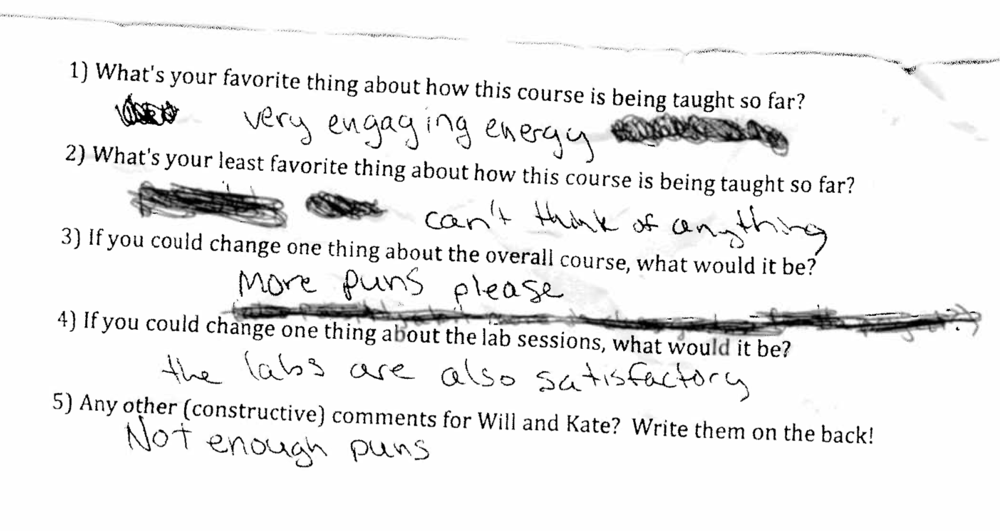

Will Styler
The Benefits of using humor
Common fears about classroom humor
Pitfalls to look out for
Where to draw the line
How to work humor into your teaching
When a sound (usually a vowel) is introduced to a word in order to prevent a linguistically undesirable combination.

“OMG, there is NO WAY that /ʃ/ and /s/ are going to get together. I’m just going to have /ɪ/ show up to block that.”
Humor can make an emotional connection for students.
We’ve all been epenthesized.
Based on studies (here and here), it seems to help with recall.
Incorporating your material into jokes gives people more to grab onto
Emotion helps with recall!
How much would test scores improve if your students could have a good laugh mid-exam?
People want to know why people are laughing. So they’ll listen
Nothing breaks up monotony like a good meme or LOLCat.
Funny questions get better responses
If a student tells one of your jokes outside the classroom, you’ve infected them.
Theoretically, bees are dying in the midwest because of synergistic chemical exposures that cause their immune glue to say “WE GIVE UP! COME ON IN” to pathogens. - MS Biology, Chatham University
People trust their government more when they voted for the guy in charge. - Sociology/Political Science, Penn State
“It appears, based on experimental evidence, that vowel perception is pretty much magic.” - Linguistics, University of Colorado

Doesn’t matter.
Use other people’s humor
Partial credit is given for sincere effort.
“That was funnier than you all throught it was”
The Rimshot/Sad Trombone key
Move on! You can’t win them all.
Do they now?
Lasting respect comes from knowledge and fairness, not a stiff upper lip
Levity provides a contrast for turning up the fear
You’re going to, sooner or later.
It’s often useful to be able to be ridiculous
A wizard is never late. He always arrives precisely when he means to. - Gandalf
It’ll be awesome
… usually
-If you tell them that the answer to everything is 42, they may answer everything with “42”.
Seriously, watch out. Make sure they know it’s a joke, or they’ll study it.
Consider marking joke answers on exams
You can make fun of yourself, but don’t undermine yourself.
“Oh well, looks like ‘scatterbrained academic’ is a thing”
“Oh well, looks like I don’t know enough to teach this class!”
Humor in the wrong place can be offensive.
If there’s already tension, avoid humor.
It can push the lines of professionalism
… but it’s not actually against any rules
Too much humor is distracting.
“Students don’t necessarily want Jerry Seinfeld as their instructor,” she says. “They want appropriate humor that is relevant, lightens the mood and makes the information memorable.”

“Sorry, Physics Majors, speech is way cooler”
“Minimalist Syntacticians! Amirite?”
“That theory is dumber than Megan’s hat”
“Wow, no wonder you messed up last week’s homework Mark!”
Don’t try to convince them that the joke was funny
Don’t respond with more humor to minimize the concern
Let them know their concerns are heard
Let them know what the point of the humor was in your class
Explain that it wasn’t your intent to be hurtful
Don’t minimize their concerns
Most responses related to a one-time comment are simple discussions
Issues surrounding humor germane to the course are viewed more favorably
They appear to have a sense of humor!


A photon checks into a hotel. The front desk asks if it has any luggage. It replies “No, I’m traveling light”
The past, the present and the future all walk into a bar. It was tense.
What did the perscriptivist owl say? Whom whom.
Include a good/bad joke to make them want to read the email
Send out funny articles/memes related to the course materials


“Freddy McPolarbear takes out a loan at TundraBank for $5000. If the interest rate is 5%…”
“Freddy McPolarbear stumbles upon a group of people speaking an unfamiliar language. Before eating them, he wants to analyze the sound system they’re using….”
“Will, during his weekend job as Batman, jumps off a 50 foot building. Assuming he weighs 220 pounds, how fast will be be going when he lands?”
The smallest unit of contrastive sound in a language is called a…
Phone
Allophone
Phoneme
Diphone
iPhone

You’ve broken bad, and are now the vocalic consigliere in the Phonetic Mafia. Don Gioschwanni, the mob boss, read an article that elk are more frightened when they hear calls from elk with very low formants, so he tells you to recruit a new enforcer with formants that are as low as possible. One of the underbosses brings you the three candidates.
First, there’s Carlos “the Cougar”, a young man, only 5’4”, but he’s got the breathiest voice you’ve ever heard. Then, there’s Sammy “the Smasher”, 5’11” and almost 400lbs of solid muscle, as wide around as Frankie is tall. Finally, you’ve got Johnny “the Giraffe”, who’s 6’8” and has the longest neck you’ve ever seen.
If you get stuck, work with your neighbor
Don’t target specific students
Mind the timing
Avoid protected classes
Be responsive and caring if a joke hurts somebody
Don’t be Jerry Seinfeld.
It reduces stress
In encourages engagement
It helps people learn the subject matter
It makes you more awesome/memorable as a teacher
It makes your class more fun!
Will Styler - will@savethevowels.org